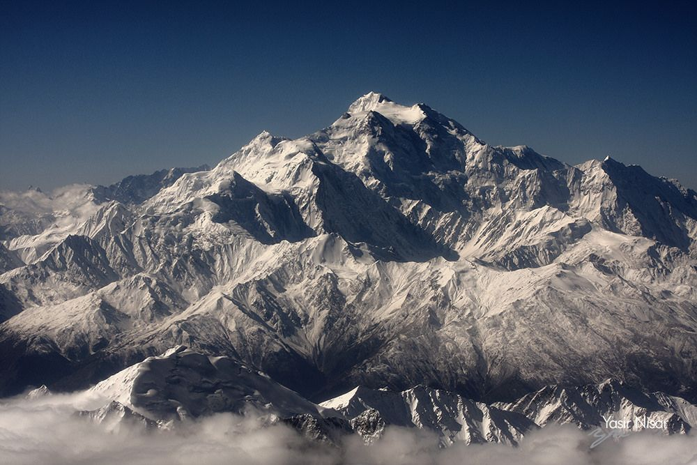

HIMALAYAS
The Himalayas in Pakistan are part of the world’s...

KARAKORAM
The Karakoram is one of the world’s most spe...

The Hindu Kush is a large mountain range located in Central and South Asia. It stretches mainly across Afghanistan and extends into northern Pakistan, forming part of the greater mountain system that also includes the Himalayas and the Karakoram. The range is about 800 kilometers (500 miles) long and contains many high peaks, some rising over 7,000 meters above sea level.
The Hindu Kush has historically been an important natural barrier between regions. For centuries, traders, travelers, and armies passed through its mountain passes, including routes connected to the ancient Silk Road. Because of its rugged terrain and harsh climate, many areas of the range remain remote and difficult to access.
The mountains are also home to diverse wildlife and cultures. Communities living in the valleys depend on agriculture and herding, adapting to the challenging environment. The Hindu Kush plays an important role in supplying water to nearby regions through melting snow and glaciers, which feed major rivers in Afghanistan and Pakistan.

The Himalayas in Pakistan are part of the world’s...
The Karakoram is one of the world’s most spe...